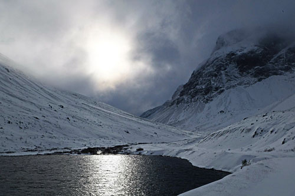

Молодой человек из Санкт-Петербурга. Пока мы учимся в университетах и работаем, Анатолий открывает для себя новые места и проходит школу жизни.
Как давно вы начали путешествовать автостопом?
Всего четыре года назад. Но это стало самым насыщенным временем в жизни.
Легко ли найти человека, который подвезет бесплатно? Как вы ищете водителей?
Они сами меня находят. Я лишь выхожу на трассу и поднимаю большой палец вверх.
Расскажите о самых смешных историях с водителями?
Бывали душевные беседы, интереснейшие люди, бухающие прямо за рулем пацанчики, пьяные кавказцы, священники. А вот смешных историй не примомню. Наверное, мое кино — не комедия.
Ваша самая длительная автостопная поездка?
1200 км — Мончегорск — Питер.
Автостоп — рисковое занятие. Не боялись, что водитель увезет «не туда»?
Бывало, сомнения закрадывались, когда водитель сворачивал с основной трассы в сторону. Но все становилось на свои места, когда он отвечал, что так будет быстрее.
Как вы распределяете свои расходы?
Очень просто: трачусь только на еду, ну и по необходимости на общественный транспорт, который сможет вывезти до трассы.
Вы путешествуете один?
Первый раз отправился один, хотел самостоятельно опробовать новое. Теперь, набравшись опыта, беру с собой спутниц.
Как вы выбираете маршруты?
Порой маршрут выбирает меня. Правда — пришло в голову, куда надо ехать, и все. Еду.
Самый неприятный случай из ваших поездок автостопом?
Самый неприятный, это когда стоишь пять часов, а потом останавливаются и спрашивают деньги. Ну, это единожды было, около Москвы. А так… Ну, наверное, абхазцы, с которыми я ехал, напились и выжимали из своей тачки все возможное на горном серпантине. Было страшно. Очень. Но я не встревал в эту игру водителя — мог бы только раззадорить. Я успокоился, когда увидел очень уверенное лицо абхазца за рулем. Наверное, он по этой дороге тысячный раз ехал.
5 советов начинающему автостопщику.
- 1. Помни, что ты просто гуляешь, а если кто и подвезет, то будет просто прекрасно.
- 2. Не стой на месте — иди! Так ты всегда будешь в пути, хоть даже и медленно передвигаясь.
- 3. Не считай время! Это ни к чему.
- 4. Улыбайся.
- 5. Почувствуй этот прекрасный момент!